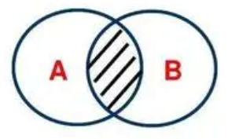

Web学习笔记(二)：CSS篇
声明：本篇笔记部分摘自《Web前端技术 - 航空工业出版社》，遵循CC BY 4.0协议。
存在由AI生成的小部分内容，仅供参考，请仔细甄别可能存在的错误。
一、CSS3概述
CSS（Cascading Style Sheets，层叠样式表）是一种用于描述网页外观和格式的样式表语言，
具有控制网页样式、实现结构与样式分离、提升用户体验三大功能。
CSS演进的一个主要变化就是W3C决定将CSS3分成一系列模块。浏览器厂商按CSS节奏快速创新，因此通过采用模块方法，CSS3规范里的元素能以不同速度向前发展，因为不同的浏览器厂商只支持给定特性。[1]
二、CSS3基础
1.CSS3基本语法
CSS3样式表由一个或多个CSS3样式组成，，每个CSS3样式由选择器和声明组成。

- 选择器：用于匹配
H5中的不同元素，可以是标签名、类名、ID等。 - 声明：用于命令浏览器如何渲染指定的对象，由属性和属性值两部分组成。
- 属性：用于设置元素样式的项。
- 属性值：设置属性效果的参数，可以是带单位的数字或关键字。
CSS3的注释格式： /* 注释内容 */
2.CSS3的网页引入方式
① 行内样式
<标签名 style="属性1: 属性值1; 属性2: 属性值2; ···"></标签名>
② 内嵌样式表
1 | |
为保证浏览器提前识别解析CSS样式，一般将内嵌样式表写在HTM34L文件的<head>之中，<title>之后。
③ 链接样式表
将样式放在独立的CSS文件中，使用<link>标签进行链接:
1 | |
3.CSS3选择器
① 基本选择器
| 选择器 | 格式 | 举例 | 备注 |
|---|---|---|---|
| 标签选择器 | 标签名 {} |
p {font-size: 20px; color: lightBlue;} |
|
| 类选择器 | .类名 {} |
.author {font-size: 20px; color: lightBlue;} |
|
| ID选择器 | #ID {} |
#stu1 {font-size: 20px; color: lightBlue;} |
|
| 通配选择器 | * {} |
* {margin: 0; padding: 0; border: 2px;} |
用于选择所有标签 |
② 复合选择器
| 选择器 | 格式 | 范围图示 | 备注 |
|---|---|---|---|
| 交集选择器 | 标签名.类名 {}标签名#ID {} |
同时满足两个选择器的标签  |
前者必须为标签选择器；后者为类选择器或ID选择器 |
| 并集选择器 | 选择器1，选择器2，选择器3，··· {} |
所有满足选择器的标签 |
有利于减少CSS样式的冗余，提高网页加载速度 |
| 后代选择器 | 选择器1 选择器2 {} |
选择器1 ├─ 选择器2 ├─ 其他元素 │├─ 选择器2 │└─ 其他元素 └─ 其他元素 |
选择所有后代元素，包括直接子元素和更深层级的元素 |
| 子代选择器 | 选择器1>选择器2 {} |
选择器1 ├─ 选择器2 ├─ 其他元素 │├─ 选择器2 │└─ 其他元素 └─ 其他元素 |
只选择直接子元素，不会深入到更低层级的后代 |
| 相邻选择器 | 选择器1+选择器2 {} |
根元素 ├─ 选择器1 ├─ 选择器2 ├─ 其他标签 ├─ 选择器2 └─ 其他标签 |
选择元素1之后紧接着的兄弟元素元素2 |
| 兄弟选择器 | 选择器1~选择器2 {} |
根元素 ├─ 选择器1 ├─ 选择器2 ├─ 其他标签 ├─ 选择器2 └─ 其他标签 |
选择元素1之后的所有元素2 （只要它们是同一父元素的子元素） |
③ 伪类选择器
- 用于定义元素的特殊状态
| 性质 | 分类 | 选择器 | 示例 | 描述 |
|---|---|---|---|---|
| 动态伪类选择器 | 锚点伪类 | :link | a:link {clolr: blue;} | 只用于设置链接访问前的样式 |
| :visited | a:link {clolr: red;} | 只用于设置链接访问后的样式 | ||
| 行为伪类 | :hover | a:hover {color: blue;} | 设置鼠标悬浮的样式 | |
| :active | a:active {color: red;} | 设置鼠标按下但未松开时的样式 | ||
| :focus | a:hover {color: blue;} | 设置元素获得焦点时的样式 | ||
| 否定伪类选择器 | 否定 | :not() | grid:not(p) {color: red;} | 匹配非指定元素或选择器的每个元素 |
| 状态伪类选择器 | 启用 | :enabled | input[type="text"]:enabled {color: blue;} | 匹配每个被启用的元素(多用于表单) |
| 禁用 | :disabled | input[type="text"]:disabled {color: grey;} | 匹配每个被禁用的元素(多用于表单) | |
| 选中 | :checked | input[type="button"]:checked {color: blue;} | 匹配每个被选中的元素(多用于按钮、复选框) |
备注：
- 同时使用动态伪类选择器时，
:hover必须在:link和:visited之后，:active必须在:hover之后；否则对应的样式会无法显示。 - 四者的顺序为：a:link -> a:visited -> a:hover -> a:active*（简记：LoVe HAte）[2]。
结构伪类选择器不常用，此处略去。- 常见cursor属性(鼠标指针样式)见下表：

④ 伪元素选择器
- 用于定义元素指定部分的样式，使用双冒号为前缀。
- 基本格式：
选择器::伪类名 {属性1：属性值1; 属性2：属性值2; ···}
| 选择器 | 描述 | 示例 |
|---|---|---|
:before |
在选定的元素前添加内容 | p::before {content: "CSS3";} |
:after |
在选定的元素后添加内容 | p::after {content: "CSS3";} |
- 备注：使用伪元素选择器添加的内容无法被鼠标框选选中。
⑤ 属性选择器
- 根据标签的属性匹配元素
| 选择器 | 描述 | 示例 |
|---|---|---|
E[attr] |
用于匹配所有拥有attr属性的E元素，无论属性的值是多少 | a[id] {color: blue;}a[id][class] {color: blue;} |
E[attr="value"] |
用于匹配所有attr属性值为value的E元素 | a[id="first"] {color: red;}a[id="first"][class="nav"] {color: red;} |
E[attr~="value"] |
用于匹配attr属性列表中包含value的E元素 | a[title~="web"] {color: red;} |
E[attr^="value"] |
用于匹配attr属性列表以value开头的E元素 | a[title^="web"] {color: red;} |
E[attr$="value"] |
用于匹配attr属性列表以value结尾的E元素 | a[title$="web"] {color: red;} |
E[attr*="value"] |
用于匹配attr属性列表中包含"value"字符串的E元素 | a[title*="web"] {color: red;} |
E[attr|="value"] |
用于匹配attr属性为"value"或以以"value"开头的E元素 | a[title|="web"] {color: red;} |
4.CSS3的继承性与层叠性
- 继承性：在HTML5结构中，后代元素会继承祖先元素的CSS3样式(不可继承边框、边界、背景、定位、布局、尺寸等)。
- 层叠性：为一个元素设置多个样式时，高优先级的样式会覆盖低优先级的样式。
- 优先级递减排序：行内样式 > ID选择器 > 类、伪类、属性选择器 > 标签选择器 > 通配选择器 > 继承样式
- 权重相同时遵循就近原则
三、CSS3常用属性
1.CSS3常用长度单位及颜色表示
- 绝对长度：是固定不变的长度，多用于可以固定大小或位置的情况
- cm - 厘米
- mm - 毫米
- in - 英寸(inch)
- px - 像素(pixel) [常用]
- pt - 点(point)
- pc - 派卡(pica)
- 换算关系：1in = 2.54cm = 25.4 mm = 72pt = 6pc[3]
- 相对长度：是相对于另一个长度属性的长度，多用于响应式布局
- em - 相对于元素的字体大小
- ex - 相对于当前字体的高度
- ch - 相对于"0"的宽度
- rem - 相对于根元素的字体大小
- vw - 相对于视口(浏览器窗口)宽度的1%
- vh - 相对于视口(浏览器窗口)高度的1%
- vmin - 相对于视口(浏览器窗口)宽度的1%
- vmax - 相对于视口(浏览器窗口)宽度的1%
- % - 相对于父元素的尺寸 [常用]
- 颜色值
- 颜色名称：直接写明元素的颜色单词
- 例：
p {background-color: lightblue;}
- 例：
- 十六进制值表示：由
#符号开头，后面跟随六个十六进制数字，分别表示红、绿、蓝三种颜色的值。- 例：
p {color: #0077FF;}
- 例：
- RGB 值：使用
rgb()函数来定义颜色，参数为红、绿、蓝三种颜色的值，范围从 0 到 255。- 例：
p {color: rgb(255, 99, 71);}
- 例：
- 颜色名称：直接写明元素的颜色单词
在不同的分辨率下，像素点的大小是不同的。所以同一个网页，以px作长度单位时，在不同的分辨率下显示的大小是不同的。在低分辨率下，像素点较大，细节不够清晰，显示的页面也大，但模糊不清。
实际上,无论是相对还是绝对单位,最终都转化为px。所以一般来说，在网页制作时，基本单位都选择px而不是pt，因为pt也是通过浏览器的DPI转换成px显示（比如FireFox的DPI是96，则有9pt = 12px）。不仅pt，cm/in/mm等都是转换成px的。所以无论用绝对还是相对，在不同分辨率下都是会变的。不要认为把长度设置为3cm，它就会在不同的分辨率下保持3cm不变。[3]
2.文本属性
① 字体样式
- 字体样式
- 格式：font-family: “”;
- 示例：
p {font-family: "宋体"}、span {font-family: "Times New Roman"} - 备注："Times New Roman"多用于数字的字体
- 字号(字体大小)样式
- 格式：font-size: 值 | 关键字;
- 示例：
p {font-size: 20px;} - 备注：
- 值可以取以px、em、pt等为单位的数值，也可以取基于父元素或默认值的百分比。
- 关键字包括xx-smal、x-small、small、large、x-large、xx-large，以及根据父元素字体大小变化的smaller和larger。
- 字体粗细样式：
- 格式：font-weight: normal(正常) | bold(加粗) | lighter(减细) | number(100-900之间的九个数值);
- 示例：
p {font-weight: blod;} - 备注：Win环境下，文本默认字体为"微软雅黑"，仅支持400与700两种字粗，设置为其他值时会用这两种效果替换，可能看不出变换。
- 字体风格样式：
- 格式：font-style: normal(正常) | italic(斜体) | oblique(倾斜)
- 示例：
span {font-style: italic;} - 备注：oblique适用于没有斜体样式的字体，将其强制倾斜。
②文本格式
| 项目 | 格式 | 备注 |
|---|---|---|
| 缩进 | text-indent: 0 | 缩进长度; | 长度可以是pm、em、pt、% |
| 水平对齐 | text-align: left | right | center | justify(两端对齐); | |
| 修饰 | text-decoration: none | underline | overline | line-through(删除线); | |
| 省略 | text-overflow: clip(不省略) | ellipsis(省略) | 隐藏文本宽度过大溢出的部分，用…标记 |
| 字符间距 | word-spacing: normal(无间距) | 间距值; | 字母之间的间距，默认为0 |
| 单词间距 | letter-spacing: normal(正常间距) | 间距值; | 单词之间的间距 |
| 行高 | line-height: normal(正常行高) | number(当前字体高度的倍数) | 高度值; | |
| 自动换行 | word-break: normal(浏览器规则) | break-all(可截断单词) | keep-all(只在空格处换行); | |
| 空白符处理 | white-space: normal(忽略空白) | nowrap | pre | pre-line | pre-wrap; | 较为复杂，用时再查询规则，此处忽略。 |
| 溢出内容处理 | overflow: visible(溢出在边框外) | hidden | scroll(始终提供滚动条) | auto(有溢出时提供滚动条); |
3.图像属性
| 项目 | 格式 | 备注 |
|---|---|---|
| 宽度 | width: 宽度值; | |
| 高度 | height: 高度值; | |
| 边框宽度 | border-width: 宽度值*4; | |
| 边框风格 | border-style: 样式*4; | 样式 = solid(单实线) | dotted(点线) | dashed(虚线) | double(双线) | groove(槽线) | ridge(谷线) |
| 边框颜色 | border-color: 颜色值*4; | 颜色值的表示见本篇笔记的 三、1 部分 |
| 不透明度 | opacity: 0~1; | 数值越高越不透明 |
| 圆角 | border-radius: 值*4; | 在中间添加-top-right-等可单独设置每个角的圆弧大小 |
| 阴影 | box-shadow: 水平位置 垂直位置 模糊距离 阴影尺寸 outset | inset; | 可直接使用阴影效果生成工具Neumorphism.io、Box Shadows等直接生成需要的CSS阴影样式 |
- 备注：
- 属性值列表中标注了
*4的，表示可以设置1-4个值，分别控制：上-右-下-左 | 上-左右-下 | 上下-左右 | 上-右-下-左。同时，可以在属性项中加上-方向-指定设置其中某个方向上的样式。- 例：
img {border-top-width: 2px;}，方向可选：left | right | top | bottom
- 例：
- 使用
border属性可以在同一个声明中统一设置边框宽度、风格和颜色。- 例：
img {border: 2px solid black;}
- 例：
- 属性值列表中标注了
4.网页背景
| 项目 | 格式 | 备注 |
|---|---|---|
| 背景颜色 | background-color: transparent | 颜色值; | |
| 背景图像 | background-image: none | url(图片路径); |
如body {background-image: url(bg.png);} |
| 显示方式 | background-repeat: repeat | repeat-x | repeat-y | no-repeat | round | space; |
repeat表现为重复，round表现为缩放填充， space表现为按相同间距平铺填充 |
| 起始位置 | background-position: 关键字 | 偏移量; | 水平 垂直格式，关键字如left top，偏移量如0% 0%或0pos 0pos(单位为px或em)，缺省其中一个时，缺省项为center或50% |
| 固定方式 | background-attachment: scroll(相对元素固定) | fixed(相对浏览器窗口固定) | lcoal(相对元素内容固定); |
- 备注：
- 可使用
background属性在同一声明中设置多个属性值, 其中必须包含颜色或图像，其他可选- 如：
body {background: url(bg.png) repeat scroll;}
- 如：
- 可使用
5.列表属性
| 项目 | 格式 | 备注 |
|---|---|---|
| 项目符号 | list-type: 关键字; | 关键字包括：disc(●) | circle(○) | none | square(■) | decimal(1) | lower-alpha(a) | upper-alpha(A) | lower-roman(i) | upper-roman(Ⅰ) | cjk-ideographic(一) |
| 项目符号位置 | list-style-position: outside | inside; | outside表示符号位于文本左侧，且在文本以外；inside表示符号位于文本以内，文本根据符号位置对齐 |
| 符号自定义图片 | list-style-image: none | url(图片路径); |
- 备注：
- 常用于取消列表的默认样式。
- 使用
list-style属性在同一声明中设置多个属性值。
6.超链接属性
- 一般通过设置载体的样式来设置超链接的样式，载体可以是图片、文本等，相关样式已在前文给出。
- 修改超链接访问前后的样式，使用动态伪类选择器实现。
7.表格属性
| 项目 | 格式 | 备注 |
|---|---|---|
| 标题位置 | caption-side: top | bottom; | |
| 边框合并 | border-callapse: saparate(分开) | collapse(合并); | |
| 边框间距 | boder-spacing: 间距值; | 写一个值控制所有方向，两个值分别控制水平和竖直方向；间距不可取负值 |
| 显示空单元格 | empty-cells: show | hide; | 选择hide时，不绘制空单元格的边框 |
| 渲染方法 | table-layout: auto | fixed; | 默认情况下，列宽由单元格内容决定；设为fixed时，列宽由表格宽度和列宽度确定 |
8.表单属性
- 对文本、图片、选项符号的样式调整已在前文给出.
“设置表单控件获得焦点时的样式需要使用
:focus选择器。设置单选钮和复选框的样式时，可以先将它们隐藏，再通过设置其提示信息的样式来实现单选钮与复选框的功能。此时就需要使用伪类选择器:checked匹配选中的单选钮或复选框，接着搭配使用其他选择器匹配选中的单选钮或复选框的提示信息，然后设置相应提示信息的样式，就可以通过提示信息的样式变化提醒用户选择了哪个选项，从而在隐藏单选钮或复选框的同时 不影响使用它们的功能。” ——《Web前端技术》P137
四、CSS3布局
1.盒子模型
2.元素的排版
3.常见网页版式
4.响应式布局
五、CSS3变形
1.2D变形
2.3D变形
六、CSS3过渡
1.过渡的相关属性
2.过渡的触发方式
七、CSS3动画
1.关键帧
2.动画的相关属性
参考资料
- 百度百科.CSS3[EB/OL].(2024-06-17)[2025-05-07]. https://baike.baidu.com/item/CSS3/4059544#reference-3. ↩
- 牧之 |.a与a:link、a:visited、a:hover、a:active[EB/OL].(2013-07-30)[2025-05-07]. https://www.cnblogs.com/exmyth/p/3226654.html. ↩
- 勤奋的夕阳一刀.CSS里面的长度单位px/pt/em/in/pc/mm/cm解释[EB/OL].(2015-10-07)[2025-05-08]. https://www.cnblogs.com/913815ccmm/p/4858638.html. ↩